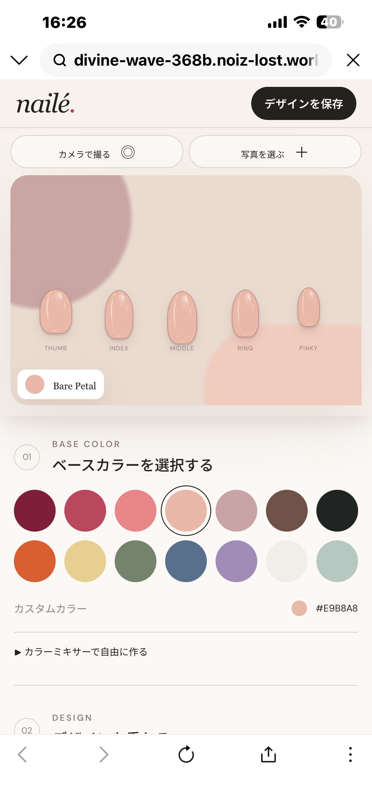

まつたけ
毎朝4時ごろに起こしにくる、優しい性格。

毎朝4時ごろに起こしにくる、優しい性格。

作業中にキーボードの上に座りに来るくらい甘えん坊。


日々のお世話や体調、遊んだ時間まで。二匹との暮らしで本当に欲しかったものをまとめた猫の生活記録アプリです。


毎日の目標を記録して、できた日にスタンプ。続けた分だけポイントが貯まり、自分で決めたご褒美と交換できるアプリです。


製作中
ベースカラーやパーツを選び、ネイルデザインを画面上で試せるシミュレーターです。